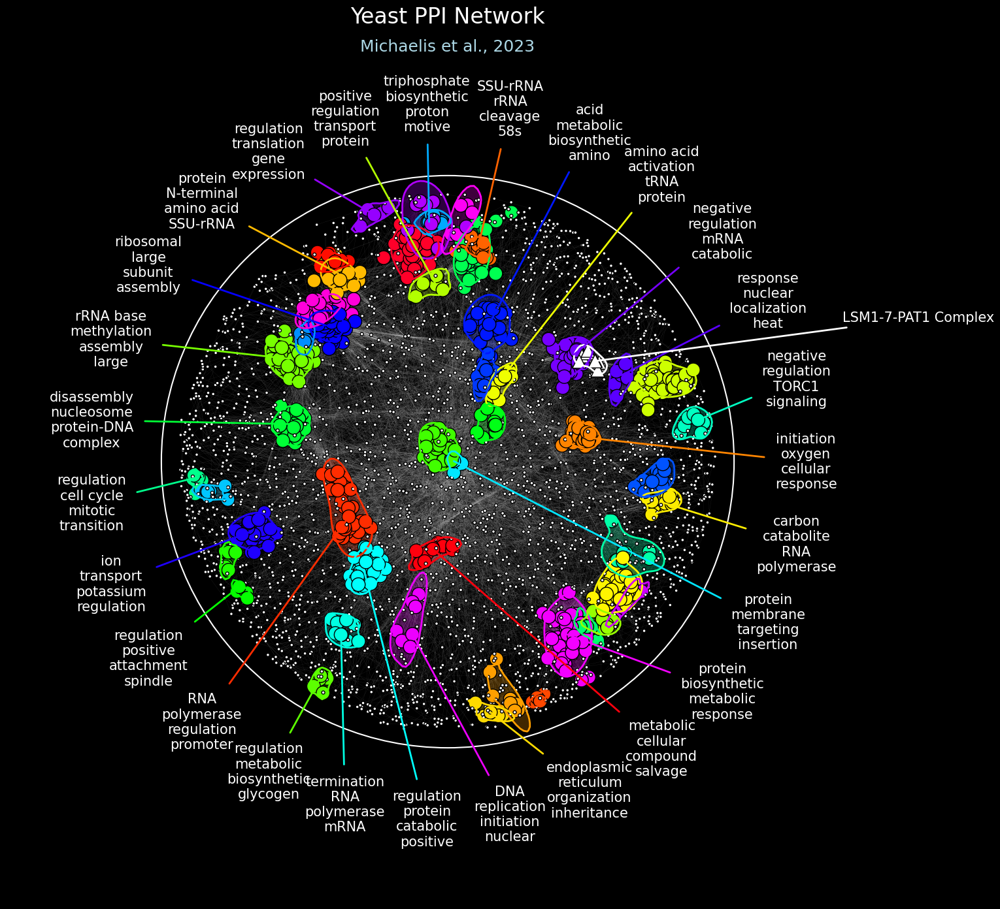

Visualizing Networks in RISK¶
Visualization highlights clusters within the network to make modular structure and functional associations easier to interpret. RISK provides a flexible and powerful plotting interface via the NetworkPlotter object. This enables generation of publication-ready figures with detailed domain annotations, significance-driven coloring, contours, and rich label customization.
Create a NetworkPlotter¶
Load your NetworkGraph object into a NetworkPlotter.
Parameters:
graph(NetworkGraph): TheNetworkGraphobject containing the network structure to be visualized.figsize(tuple, optional): Size of the figure, specified as a tuple(width, height)in inches. Defaults to (10, 10).background_color(str, list, tuple, or np.ndarray, optional): Background color of the plot. Provide a single color (e.g.,'white',(1.0, 1.0, 1.0)for RGB, or(1.0, 1.0, 1.0, 1.0)for RGBA). Defaults to 'white'.background_alpha(float, None, optional): Transparency level of the background color. If provided, it overrides any existing alpha values found inbackground_color. Defaults to 1.0.pad(float, optional): Padding value to adjust the axis limits around the network plot. Defaults to 0.3.
Returns:
NetworkPlotter: An instance of the plotter initialized with the provided graph and settings.
plotter = risk.load_plotter(
graph=graph,
figsize=(15, 15),
background_color="black",
background_alpha=1.0,
pad=0.3,
)
plot_title()¶
Add a title and optional subtitle overlay.
Parameters:
title(str, optional): Title of the plot. Defaults to None.subtitle(str, optional): Subtitle of the plot. Defaults to None.title_fontsize(int, optional): Font size for the title. Defaults to 20.subtitle_fontsize(int, optional): Font size for the subtitle. Defaults to 14.font(str, optional): Font family used for both the title and subtitle. Defaults to "DejaVu Sans".title_color(str, list, tuple, or np.ndarray, optional): Color of the title text. Provide a single color (e.g.,"black",(0.0, 0.0, 0.0)for RGB, or(0.0, 0.0, 0.0, 1.0)for RGBA). Defaults to "black".title_color(str, list, tuple, or np.ndarray, optional): Color of the subtitle text. Provide a single color (e.g.,"black",(0.0, 0.0, 0.0)for RGB, or(0.0, 0.0, 0.0, 1.0)for RGBA). Defaults to "black".title_x(float, optional): X-axis position of the title. Defaults to 0.5.title_y(float, optional): Y-axis position of the title. Defaults to 0.975.title_space_offset(float, optional): Fraction of figure height to leave for the space above the plot. Defaults to 0.075.subtitle_offset(float, optional): Offset factor to position the subtitle below the title. Defaults to 0.025.
plotter.plot_title(
title="Yeast PPI Network",
subtitle="Michaelis et al., 2023",
title_fontsize=24,
subtitle_fontsize=18,
font="Arial",
title_color="white",
subtitle_color="lightblue",
title_x=0.5,
title_y=0.925,
title_space_offset=0.08,
subtitle_offset=0.025,
)
plot_circle_perimeter()¶
Draw a circular boundary around the network layout.
Parameters:
scale(float, optional): Scaling factor for the perimeter's diameter. Defaults to 1.0.center_offset_x(float, optional): Horizontal offset as a fraction of the diameter. Negative values shift the center left, positive values shift it right. Defaults to 0.0.center_offset_y(float, optional): Vertical offset as a fraction of the diameter. Negative values shift the center down, positive values shift it up. Defaults to 0.0.linestyle(str, optional): Line style for the circle. Options include"solid","dashed","dashdot","dotted", or any Matplotlib-supported linestyle. Defaults to "dashed".linewidth(float, optional): Width of the circle's outline. Defaults to 1.5.color(str, list, tuple, or np.ndarray, optional): Color of the circle. Provide a single color (e.g.,"black",(0.0, 0.0, 0.0)for RGB, or(0.0, 0.0, 0.0, 1.0)for RGBA). Defaults to "black".outline_alpha(float, None, optional): Transparency level for the circle's outline. If provided, it overrides any existing alpha values found incolor. Defaults to 1.0.fill_alpha(float, None, optional): Transparency level for the circle’s fill. If provided, it overrides any existing alpha values found incolor. Defaults to 0.0.
plotter.plot_circle_perimeter(
scale=1.02,
center_offset_x=0.0,
center_offset_y=0.0,
linestyle="solid",
linewidth=1.5,
color="white",
outline_alpha=1.0,
fill_alpha=0.0,
)
For a more flexible contour-based layout boundary, see plot_contour_perimeter().
plot_contour_perimeter()¶
Draw a contour boundary around the network layout.
Parameters:
scale(float, optional): Scaling factor for the perimeter size. Defaults to 1.0.levels(int, optional): Number of contour levels. Defaults to 3.bandwidth(float, optional): Bandwidth for KDE, controlling the smoothness of the contour. Defaults to 0.8.grid_size(int, optional): Resolution of the grid for KDE. Higher values create finer contours. Defaults to 250.color(str, list, tuple, or np.ndarray, optional): Color of the circle. Provide a single color (e.g.,"black",(0.0, 0.0, 0.0)for RGB, or(0.0, 0.0, 0.0, 1.0)for RGBA). Defaults to "black".linestyle(str, optional): Line style for the contour. Options include"solid","dashed","dashdot","dotted", or any Matplotlib-supported linestyle. Defaults to "solid".linewidth(float, optional): Width of the contour’s outline. Defaults to 1.5.outline_alpha(float, None, optional): Transparency level for the contour's outline. If provided, it overrides any existing alpha values found incolor. Defaults to 1.0.fill_alpha(float, None, optional): Transparency level for the contour’s fill. If provided, it overrides any existing alpha values found incolor. Defaults to 0.0.
plotter.plot_contour_perimeter(
levels=5,
bandwidth=0.8,
grid_size=250,
color="white",
linestyle="solid",
linewidth=2.0,
alpha=1.0,
fill_alpha=0.2,
)
plot_network()¶
Render nodes and edges with styles derived from significance-aware helpers.
Parameters:
node_size(int or np.ndarray, optional): Size of the nodes. Can be a single integer or an array of sizes. Defaults to 50.node_shape(str, optional): Shape of the nodes. Options include:'o': Circle. (default)'s': Square.'^': Triangle up.'v': Triangle down.- Other options:
'p','P','h','H','8','d','D','>','<,'|','_'. node_edgewidth(float, optional): Width of the edges around each node. Defaults to 1.0.edge_width(float, optional): Width of the edges in the plot. Defaults to 1.0.node_color(str, list, tuple, or np.ndarray, optional): Color of the nodes. Can be a single color (e.g.,"white","red",(0.5, 0.5, 0.5)for RGB, or(0.5, 0.5, 0.5, 0.8)for RGBA) or an array of such colors. Defaults to "white".node_edgecolor(str, list, tuple, or np.ndarray, optional): Color of the edges around each node. Can be a single color, a string of colors, or an array of string or RGB/RGBA colors. Defaults to "black".edge_color(str, list, tuple, or np.ndarray, optional): Color of the edges connecting the nodes. Can be a single color, a string of colors, or an array of string or RGB/RGBA colors. Defaults to "black".node_alpha(float or None, optional): Alpha value (transparency) for the nodes. Range:0.0(fully transparent) to 1.0(fully opaque). If provided, it overrides any alpha values innode_color`. Defaults to 1.0.edge_alpha(float or None, optional): Alpha value (transparency) for the edges. Range:0.0(fully transparent) to 1.0(fully opaque). If provided, it overrides any alpha values inedge_color`. Defaults to 1.0.
plotter.plot_network(
node_size=node_sizes,
node_color=node_colors,
node_shape="o",
node_edgewidth=1.0,
edge_width=0.03,
node_edgecolor="black",
edge_color="white",
node_alpha=1.0,
edge_alpha=1.0,
)
get_annotated_node_sizes()¶
Generate node sizes based on annotation significance.
Parameters:
singificant_size(int, optional): Size for singificant nodes. Defaults to 50.nonsignificant_size(int, optional): Size for non-singificant nodes. Defaults to 25.
Returns:
list: List of node sizes corresponding to graph nodes.
node_sizes = plotter.get_annotated_node_sizes(
significant_size=225,
nonsignificant_size=12.5,
)
get_annotated_node_colors()¶
Generate node colors based on annotation significance and optional blending.
Parameters:
cmap(str, optional): The colormap to use for node colors. Defaults to "gist_rainbow".color(str, list, tuple, np.ndarray, or None, optional): A specific color to use for all nodes. Can be a single color (e.g.,"red",(0.5, 0.5, 0.5)for RGB, or(0.5, 0.5, 0.5, 0.8)for RGBA) or an array of such colors. If specified, this will override the colormap (cmap). Defaults to None.blend_colors(bool, optional): Whether to blend colors for nodes with multiple domains. Defaults to False.blend_gamma(float, optional): Gamma correction factor for perceptual color blending. Defaults to 2.2.min_scale(float, optional): Minimum scale for color intensity. Defaults to 0.8.max_scale(float, optional): Maximum scale for color intensity. Defaults to 1.0.scale_factor(float, optional): Factor for adjusting the color scaling intensity. Defaults to 1.0.alpha(float, None, optional): Alpha value for singificant nodes. If provided, it overrides any existing alpha values found incolor. Defaults to 1.0.nonsignificant_color(str, list, tuple, or np.ndarray, optional): Color for non-singificant nodes. Can be a single color (e.g.,"white",(0.5, 0.5, 0.5)for RGB, or(0.5, 0.5, 0.5, 0.8)for RGBA) or an array of such colors. Defaults to "white".nonsignificant_alpha(float, None, optional): Alpha value for non-singificant nodes. If provided, it overrides any existing alpha values found innonsignificant_color. Defaults to 1.0.ids_to_colors(dict, None, optional): Mapping of domain IDs to specific colors. Defaults to None.random_seed(int, optional): Seed for random number generation. Defaults to 888.
Returns:
list: List of colors for each node.
node_colors = plotter.get_annotated_node_colors(
cmap="gist_rainbow",
color=None,
blend_colors=False,
blend_gamma=2.2,
min_scale=1.0,
max_scale=1.0,
scale_factor=0.5,
alpha=1.0,
nonsignificant_color="white",
nonsignificant_alpha=0.75,
ids_to_colors=None,
random_seed=887,
)
plot_subnetwork()¶
Overlay a selected group of nodes and their connecting edges with distinct styling.
Parameters:
nodes(list, tuple, or np.ndarray): List of node labels to include in the subnetwork. Accepts nested lists.node_size(int or np.ndarray, optional): Size of the nodes. Can be a single integer or an array of sizes. Defaults to 50.node_shape(str, optional): Shape of the nodes. Options include:'o': Circle. (default)'s': Square.'^': Triangle up.'v': Triangle down.- Other options:
'p','P','h','H','8','d','D','>','<,'|','_'. node_edgewidth(float, optional): Width of the node edges. Defaults to 1.0.edge_width(float, optional): Width of the edges in the subnetwork plot. Defaults to 1.0.node_color(str, list, tuple, or np.ndarray, optional): Color of the nodes. Can be a single color (e.g.,"red",(0.5, 0.5, 0.5)for RGB, or(0.5, 0.5, 0.5, 0.8)for RGBA) or an array of such colors. Defaults to "white".node_edgecolor(str, list, tuple, or np.ndarray, optional): Color of the node edges. Can be a single color or an array of string or RGB/RGBA colors. Defaults to "black".edge_color(str, list, tuple, or np.ndarray, optional): Color of the edges connecting the nodes. Can be a single color or an array of string or RGB/RGBA colors. Defaults to "black".node_alpha(float or None, optional): Transparency for the nodes. Range:0.0(fully transparent) to1.0(fully opaque). If provided, it overrides any alpha values innode_color. Defaults to None.edge_alpha(float or None, optional): Transparency for the edges. Range:0.0(fully transparent) to1.0(fully opaque). If provided, it overrides any alpha values inedge_color. Defaults to None.
plotter.plot_subnetwork(
nodes=[
"LSM1", "LSM2", "LSM3", "LSM4", "LSM5", "LSM6", "LSM7", "PAT1",
],
node_size=225,
node_shape="^",
node_edgewidth=1.0,
edge_width=0.04,
node_color="white",
node_edgecolor="black",
edge_color="white",
node_alpha=1.0,
edge_alpha=1.0,
)
plot_contours()¶
Draw contours for domains (e.g., GO term regions).
Parameters:
levels(int, optional): Number of contour levels to plot. Defaults to 5.bandwidth(float, optional): Bandwidth for KDE, controlling the smoothness of the contour. Defaults to 0.8.grid_size(int, optional): Resolution of the grid for KDE. Higher values create finer contours. Defaults to 250.color(str, list, tuple, or np.ndarray, optional): Color of the contours. Can be a string (e.g.,"white"), an RGB/RGBA value, or an array of such values. Defaults to "white".linestyle(str, optional): Line style for the contours. Options include'solid','dashed','dashdot', `'dotted'. Defaults to "solid".linewidth(float, optional): Line width for the contours. Defaults to 1.5.alpha(float, None, optional): Transparency level of the contour lines. Range:0.0(fully transparent) to1.0(fully opaque). If provided, it overrides any existing alpha values found incolor. Defaults to 1.0.fill_alpha(float, None, optional): Transparency level of the contour fill. If provided, it overrides any existing alpha values found incolor. Defaults to None.
plotter.plot_contours(
levels=5,
bandwidth=0.8,
grid_size=250,
color=plotter.get_annotated_contour_colors(
cmap="gist_rainbow",
color=None,
blend_colors=False,
blend_gamma=2.2,
min_scale=1.0,
max_scale=1.0,
scale_factor=0.5,
ids_to_colors=None,
random_seed=887,
),
linestyle="solid",
linewidth=2.0,
alpha=1.0,
fill_alpha=0.2,
)
get_annotated_contour_colors()¶
Generate colors for domain contours based on annotation significance.
Parameters:
cmap(str, optional): The colormap to use for contour colors. Defaults to "gist_rainbow".color(str, list, tuple, np.ndarray, or None, optional): A specific color to use for all contours. Can be a string (e.g.,"red"), an RGB or RGBA value, or an array of such values (strings, RGB, or RGBA). If specified, this will overwrite the colormap (cmap). Defaults to None.blend_colors(bool, optional): Whether to blend colors for nodes with multiple domains. Defaults to False.blend_gamma(float, optional): Gamma correction factor for perceptual color blending. Defaults to 2.2.min_scale(float, optional): Minimum intensity scale for the colors generated by the colormap. Controls the dimmest colors. Defaults to 0.8.max_scale(float, optional): Maximum intensity scale for the colors generated by the colormap. Controls the brightest colors. Defaults to 1.0.scale_factor(float, optional): Exponent for adjusting color scaling based on significance scores. A higher value increases contrast by dimming lower scores more. Defaults to 1.0.ids_to_colors(dict, None, optional): Mapping of domain IDs to specific colors. Defaults to None.random_seed(int, optional): Seed for random number generation to ensure reproducibility. Defaults to 888.
Returns:
list: List of colors for each domain contour.
contour_colors = plotter.get_annotated_contour_colors(
cmap="gist_rainbow",
color=None,
blend_colors=False,
blend_gamma=2.2,
min_scale=1.0,
max_scale=1.0,
scale_factor=0.5,
ids_to_colors=None,
random_seed=887,
)
plot_subcontour()¶
Draw a contour around a subset of nodes.
Parameters:
nodes(list, tuple, or np.ndarray): List of node labels or list of lists of node labels to plot the contour for.levels(int, optional): Number of contour levels to plot. Defaults to 5.bandwidth(float, optional): Bandwidth for KDE, controlling the smoothness of the contour. Defaults to 0.8.grid_size(int, optional): Resolution of the grid for KDE. Higher values create finer contours. Defaults to 250.color(str, list, tuple, or np.ndarray, optional): Color of the contour. Can be a string (e.g.,"white"), an RGB or RGBA value, or an array of such values (strings, RGB, or RGBA). Defaults to "white".linestyle(str, optional): Line style for the contour. Options include'solid','dashed','dashdot','dotted'. Defaults to "solid".linewidth(float, optional): Line width for the contour. Defaults to 1.5.alpha(float, None, optional): Transparency level of the contour lines. Range:0.0(fully transparent) to 1.0(fully opaque). If provided, it overrides any existing alpha values found incolor`. Defaults to 1.0.fill_alpha(float, None, optional): Transparency level of the contour fill. If provided, it overrides any existing alpha values found incolor. Defaults to None.
plotter.plot_subcontour(
nodes=[
"LSM1", "LSM2", "LSM3", "LSM4", "LSM5", "LSM6", "LSM7", "PAT1",
],
levels=5,
bandwidth=0.8,
grid_size=250,
color="white",
linestyle="solid",
linewidth=2.0,
alpha=1.0,
fill_alpha=0.25,
)
plot_labels()¶
Annotate selected nodes or domains with styled text and arrows.
Parameters:
scale(float, optional): Scale factor for positioning labels around the perimeter. Defaults to 1.05.offset(float, optional): Offset distance for labels from the perimeter. Defaults to 0.10.font(str, optional): Font name for the labels. Defaults to "DejaVu Sans".fontcase(str, dict, or None, optional): Defines how to transform the case of words. Can be a string ('upper','lower','title') or a dictionary mapping cases (e.g.,{'lower': 'title', 'upper': 'lower'}). Defaults to None.fontsize(int, optional): Font size for the labels. Defaults to 10.fontcolor(str, list, tuple, or np.ndarray, optional): Color of the label text. Can be a string (e.g.,"black"), an RGB or RGBA value, or an array of such values (strings, RGB, or RGBA). Defaults to "black".fontalpha(float, None, optional): Transparency level for the font color. Range:0.0(fully transparent) to1.0(fully opaque). If provided, it overrides any existing alpha values found infontcolor. Defaults to 1.0.arrow_linewidth(float, optional): Line width of the arrows pointing to centroids. Defaults to 1.arrow_style(str, optional): Style of the arrows pointing to centroids. Defaults to "->".arrow_color(str, list, tuple, or np.ndarray, optional): Color of the arrows. Can be a string (e.g.,"black"), an RGB or RGBA value, or an array of such values (strings, RGB, or RGBA). Defaults to "black".arrow_alpha(float, None, optional): Transparency level for the arrow color. Range:0.0(fully transparent) to1.0(fully opaque). If provided, it overrides any existing alpha values found inarrow_color. Defaults to 1.0.arrow_base_shrink(float, optional): Distance between the text and the base of the arrow. Defaults to 0.0.arrow_tip_shrink(float, optional): Distance between the arrow tip and the centroid. Defaults to 0.0.max_labels(int, optional): Maximum number of labels to plot. Defaults to None` (no limit.min_label_lines(int, optional): Minimum number of lines in a label. Defaults to 1.max_label_lines(int, optional): Maximum number of lines in a label. Defaults to None` (no limit.min_chars_per_line(int, optional): Minimum number of characters in a line to display. Defaults to 1.max_chars_per_line(int, optional): Maximum number of characters in a line to display. Defaults to None (no limit).words_to_omit(list, optional): List of words to omit from the labels. Defaults to None.overlay_ids(bool, optional): Whether to overlay domain IDs in the center of the centroids. Defaults to False.ids_to_keep(list, tuple, np.ndarray, or None, optional): IDs of domains that must be labeled. To discover domain IDs, you can setoverlay_ids=True. Defaults to None.ids_to_labels(dict, optional): A dictionary mapping domain IDs to custom labels (strings). The labels should be space-separated words. If provided, the custom labels will replace the default domain terms. Defaults to None.
plotter.plot_labels(
scale=1.1,
offset=0.12,
font="Arial",
fontcase={"title": "lower"},
fontsize=15,
fontcolor="white",
fontalpha=1.0,
arrow_linewidth=2.0,
arrow_style="-",
arrow_color=plotter.get_annotated_label_colors(
cmap="gist_rainbow",
color=None,
blend_colors=False,
blend_gamma=2.2,
min_scale=1.0,
max_scale=1.0,
scale_factor=0.5,
ids_to_colors=None,
random_seed=887,
),
arrow_alpha=1.0,
arrow_base_shrink=10.0,
arrow_tip_shrink=0.0,
max_labels=28,
min_label_lines=3,
max_label_lines=4,
min_chars_per_line=3,
max_chars_per_line=12,
words_to_omit=["from", "the", "into", "via", "novo", "process", "activity"],
overlay_ids=False,
ids_to_keep=None,
ids_to_labels=None,
)
get_annotated_label_colors()¶
Generate colors for labels based on annotation significance.
Parameters:
cmap(str, optional): The colormap to use for label colors. Defaults to "gist_rainbow".color(str, list, tuple, np.ndarray, or None, optional): A specific color to use for all labels. Can be a string (e.g.,"red"), an RGB or RGBA value, or an array of such values (strings, RGB, or RGBA). Warning: If specified, this will overwrite the colormap (cmap). Defaults to None.blend_colors(bool, optional): Whether to blend colors for nodes with multiple domains. Defaults to False.blend_gamma(float, optional): Gamma correction factor for perceptual color blending. Defaults to 2.2.min_scale(float, optional): Minimum intensity scale for the colors generated by the colormap. Controls the dimmest colors. Defaults to 0.8.max_scale(float, optional): Maximum intensity scale for the colors generated by the colormap. Controls the brightest colors. Defaults to 1.0.scale_factor(float, optional): Exponent for adjusting color scaling based on significance scores. A higher value increases contrast by dimming lower scores more. Defaults to 1.0.ids_to_colors(dict, None, optional): Mapping of domain IDs to specific colors. Defaults to None.random_seed(int, optional): Seed for random number generation to ensure reproducibility. Defaults to 888.
Returns:
list: List of colors for each label.
label_colors = plotter.get_annotated_label_colors(
cmap="gist_rainbow",
color=None,
blend_colors=False,
blend_gamma=2.2,
min_scale=1.0,
max_scale=1.0,
scale_factor=0.5,
ids_to_colors=None,
random_seed=887,
)
plot_sublabel()¶
Add a single label tied to a chosen set of nodes (arrow points to centroid). Useful for naming complexes or pathway modules.
Parameters:
nodes(list, tuple, or np.ndarray): List of node labels or list of lists of node labels to be used for calculating the centroid.label(str): The label to be annotated on the network.radial_position(float, optional): Radial angle for positioning the label around the network's perimeter. Range:0-360degrees. Defaults to 0.0.scale(float, optional): Scale factor for positioning the label around the perimeter. Defaults to 1.05.offset(float, optional): Offset distance for the label from the perimeter. Defaults to 0.10.font(str, optional): Font name for the label. Defaults to "DejaVu Sans".- Options: Any valid font name (e.g.,
"DejaVu Sans","Times New Roman"). fontsize(int, optional): Font size for the label. Defaults to 10.- Options: Any integer value representing font size.
fontcolor(str, list, tuple, or np.ndarray, optional): Color of the label text. Can be a string (e.g.,"black"), an RGB or RGBA value, or an array of such values. Defaults to "black".fontalpha(float, None, optional): Transparency level for the label font. Range:0.0(fully transparent) to1.0(fully opaque). If provided, it overrides any existing alpha values found infontcolor. Defaults to 1.0.arrow_linewidth(float, optional): Line width of the arrow pointing to the centroid. Defaults to 1.arrow_style(str, optional): Style of the arrows pointing to the centroid. Defaults to "->".arrow_color(str, list, tuple, or np.ndarray, optional): Color of the arrow. Can be a string, RGB/RGBA value, or an array of such values. Defaults to "black".arrow_alpha(float, None, optional): Transparency level for the arrow. Range:0.0(fully transparent) to1.0(fully opaque). If provided, it overrides any existing alpha values found inarrow_color. Defaults to 1.0.arrow_base_shrink(float, optional): Distance between the text and the base of the arrow. Defaults to 0.0.arrow_tip_shrink(float, optional): Distance between the arrow tip and the centroid. Defaults to 0.0.
plotter.plot_sublabel(
nodes=[
"LSM1", "LSM2", "LSM3", "LSM4", "LSM5", "LSM6", "LSM7", "PAT1",
],
label="LSM1-7-PAT1 Complex",
radial_position=73,
scale=1.6,
offset=0.12,
font="Arial",
fontsize=15,
fontcolor="white",
fontalpha=1.0,
arrow_linewidth=2.0,
arrow_style="-",
arrow_color="white",
arrow_alpha=1.0,
arrow_base_shrink=10.0,
arrow_tip_shrink=0.0,
)
savefig()¶
Save the current figure to file in formats like PNG, SVG, or PDF.
Parameters:
*args: Positional arguments passed toplt.savefig. Commonly used for specifying the filename (e.g.,"plot.png").pad_inches(float, optional): Padding around the figure when saving. Defaults to 0.5.dpi(int, optional): Dots per inch (DPI) for the exported image. Defaults to 100.**kwargs: Keyword arguments passed toplt.savefig, such asformat(e.g.,"png","pdf") and other options likebbox_inches.
plotter.savefig("my_plot.png", pad_inches=0.5, dpi=100)
show()¶
Display the current figure inline or in a graphical window.
Parameters:
*args: Positional arguments passed toplt.show. Typically not used, but can be included for consistency.**kwargs: Keyword arguments passed toplt.show, such asblockto control whether the display blocks the execution of code.
plotter.show()
